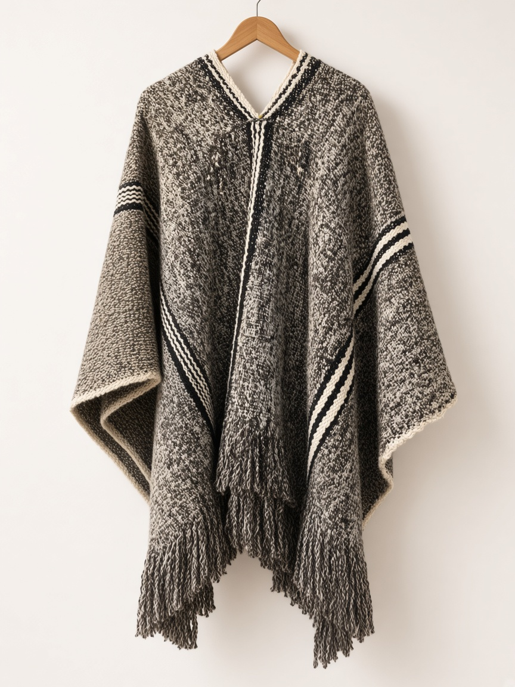
Poncho
Poncho de flecos
Lana jaspeada en gris y café, con guarda negra y blanca y flecos en el ruedo. Se pone por la cabeza y abriga de hombro a cadera.
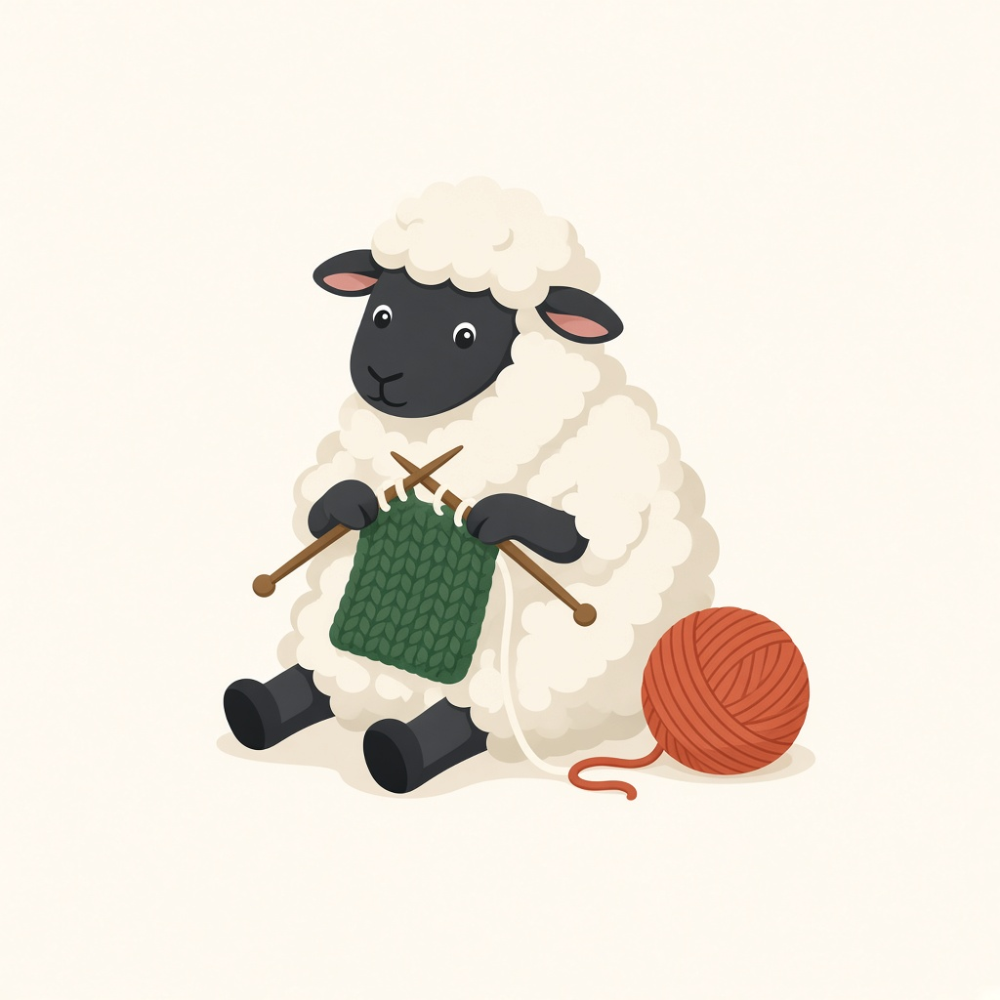
Artesanías Marlene Lana de oveja · Puerto MonttGalería Amar · local N° 8 · Pueblito Melipulli
Marlene González Ule trabaja la lana natural como lo hizo siempre: prenda por prenda, con el oficio de Chiloé y el puesto abierto en la Galería Amar, local N° 8 del Pueblito Melipulli.
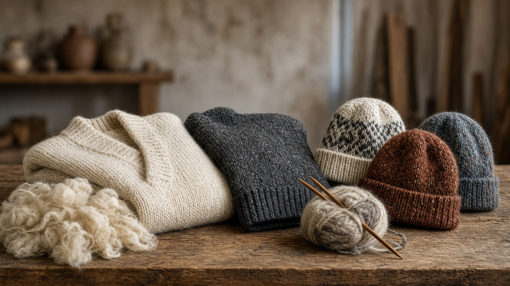
En venta
Ponchos, faldas, muñecas, pantuflas, abrigos, gorros, medias de lana y lana en madeja. Los colores y las tallas cambian según la lana del momento: en el puesto se ven, se prueban y se encargan.

Poncho
Lana jaspeada en gris y café, con guarda negra y blanca y flecos en el ruedo. Se pone por la cabeza y abriga de hombro a cadera.
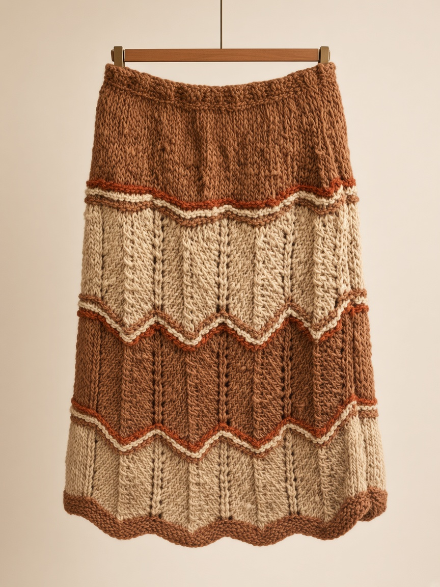
Falda
En mapudungun, el punto de esta falda se llama olas del mar. Las franjas suben y bajan como el agua en la orilla. La lana es de oveja y el color es teñido natural vegetal.
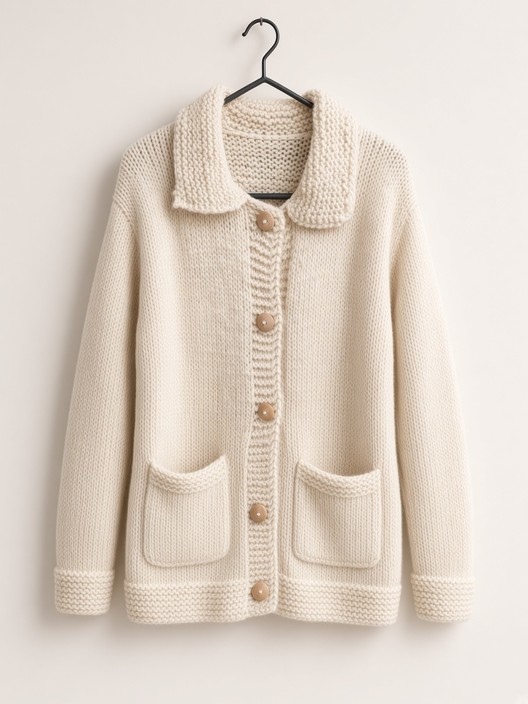
Abrigo
Lana cruda, botones de madera y bolsillos profundos. Una prenda de diario, tejida para abrigar sin perder la forma del punto.
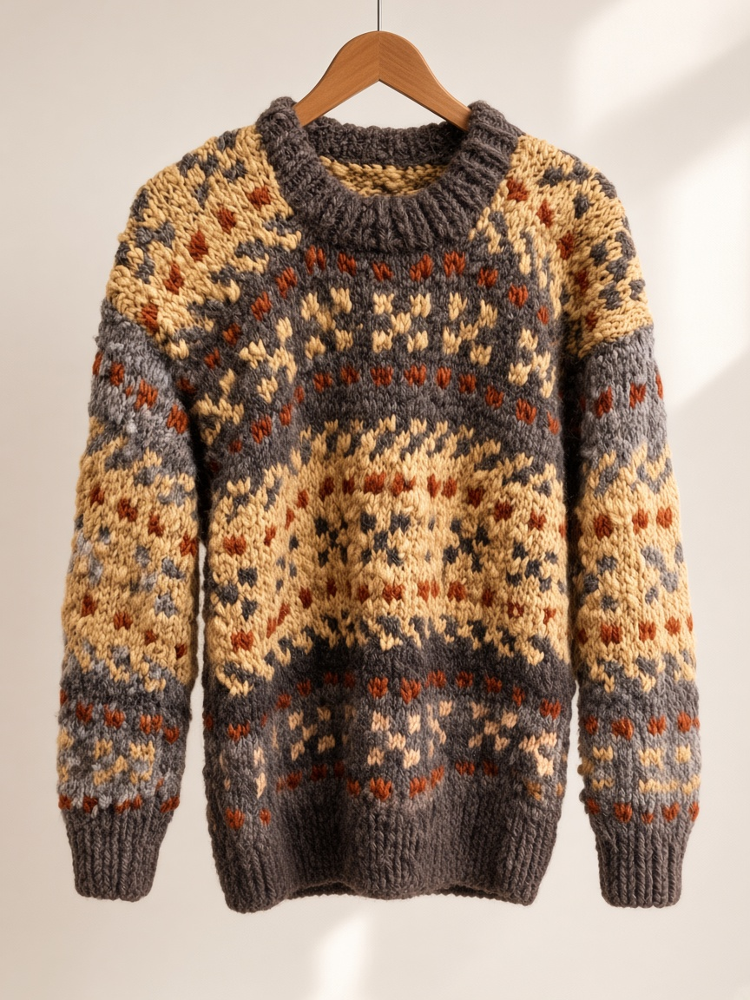
Abrigo
Cuello redondo y guarda tejida en mostaza, café y terracota. Las mangas van en lana gris jaspeada, de oveja.
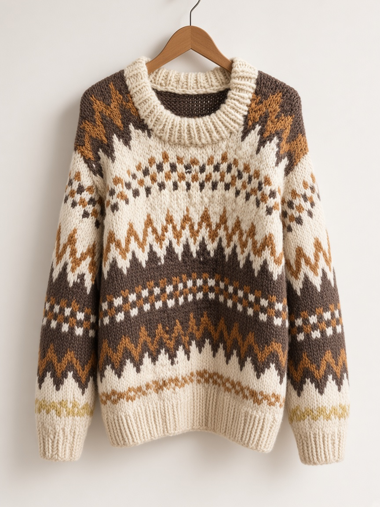
Abrigo
Lana cruda con guardas en café y caramelo. El cuello, los puños y el ruedo quedan en el tono natural de la oveja.
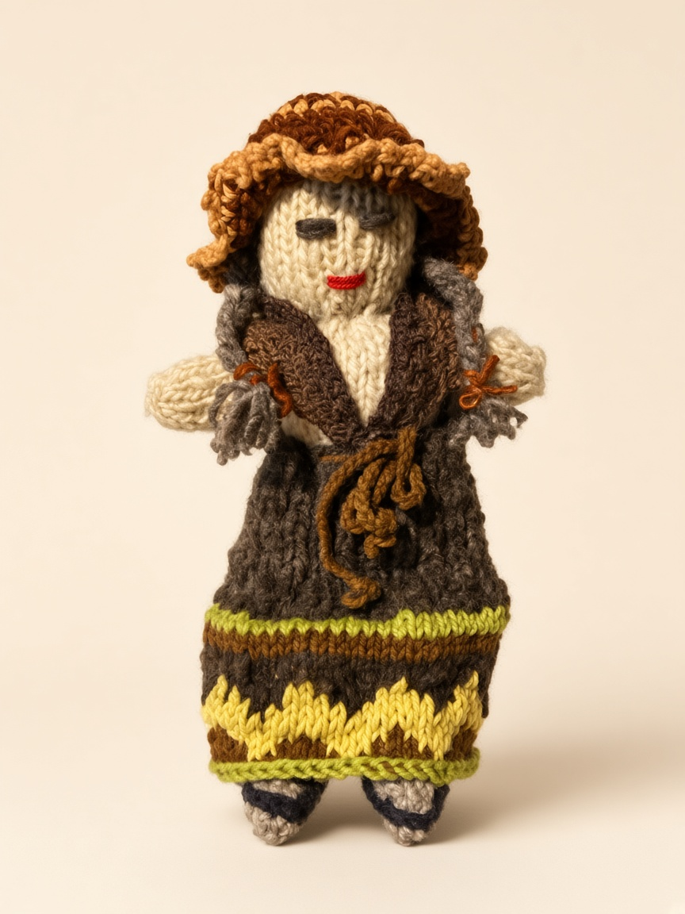
Muñeca
Tejida a mano en lana de oveja. Lleva sombrero café, chaleco y una falda gris con la franja en zigzag amarillo y verde.
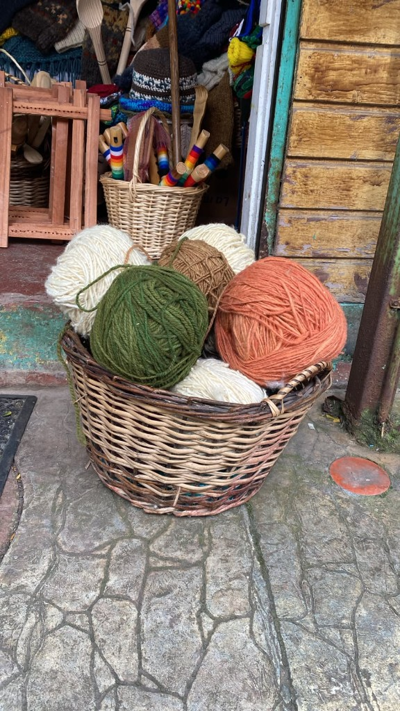
Lana
Lana hilada en crudo, verde, café y terracota. Es la misma fibra con la que Marlene teje sus prendas.
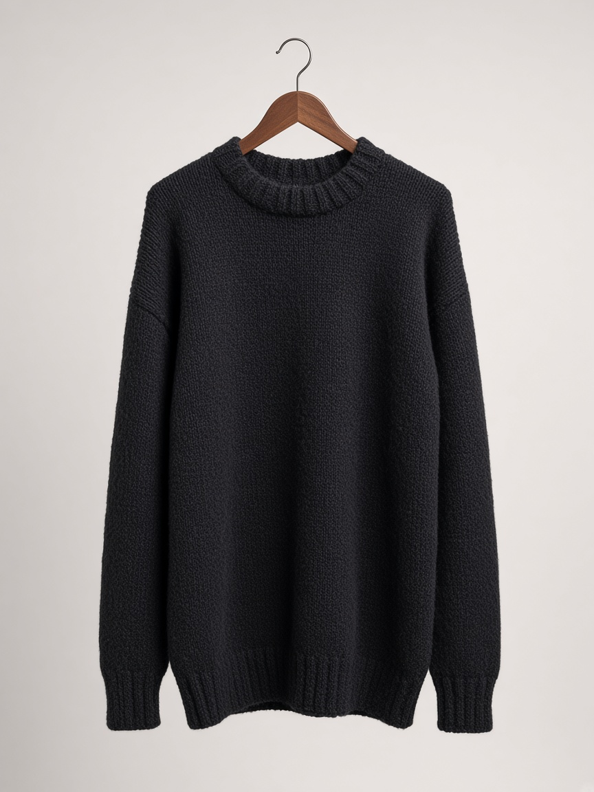
Abrigo
Cuello redondo y punto tupido. La lana de oveja oscura, tal como sale del vellón, para el invierno de Puerto Montt.
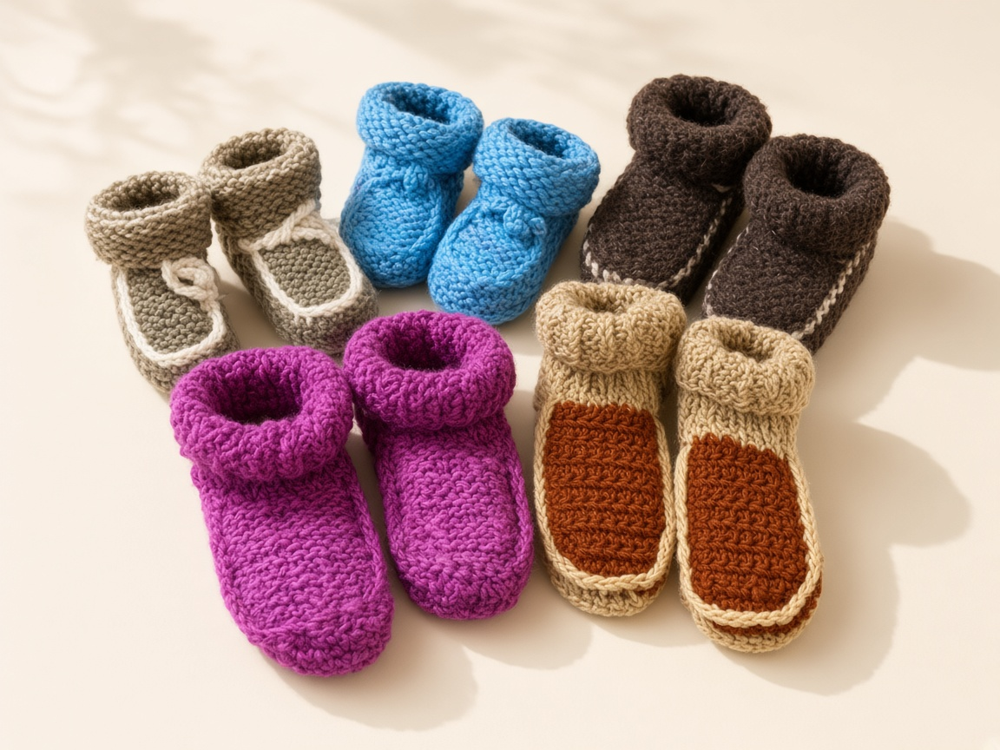
Pantuflas
Pares en magenta, azul, gris, beige y marrón. Suela tejida y caña alta para no enfriar el pie en casa.
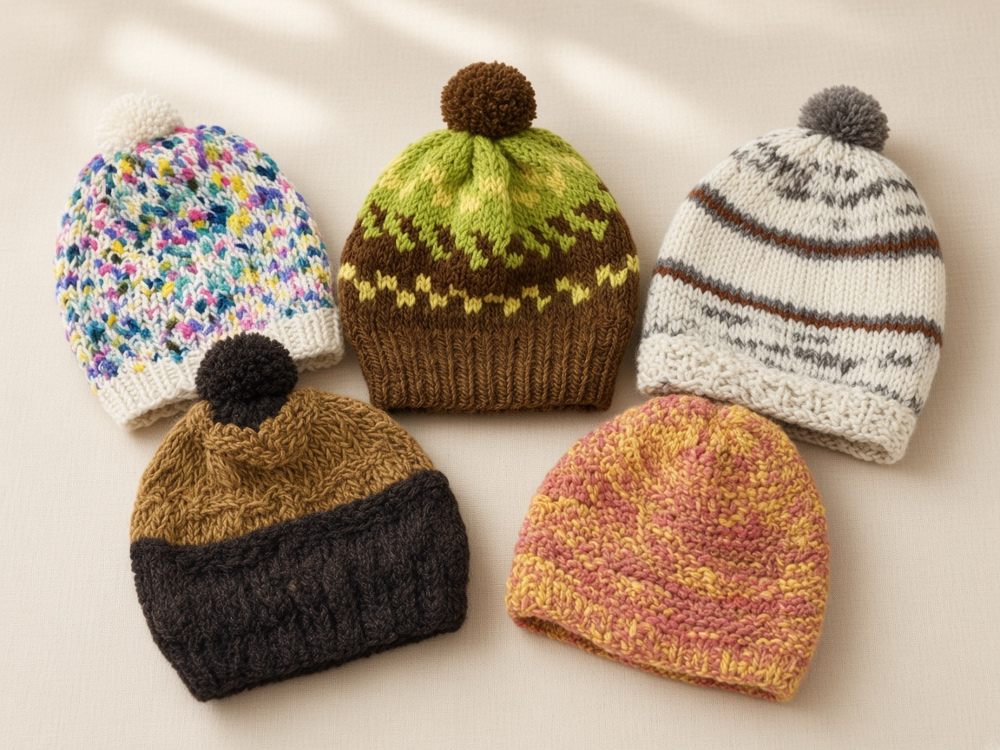
Gorros
Guardas, rayas y lanas jaspeadas. Cada gorro lleva su pompón y el mismo abrigo denso de la oveja.
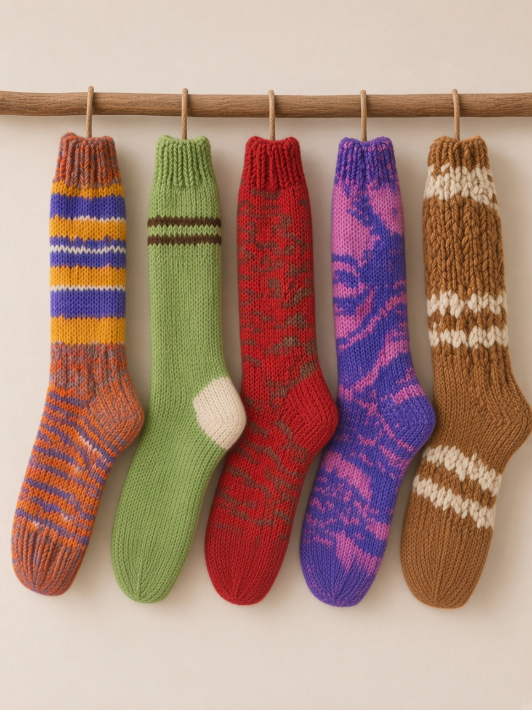
Medias de lana
Rayas, guardas y lanas teñidas a mano. Largas, de lana, para bota o para la casa.
No hay piezas en esta categoría.
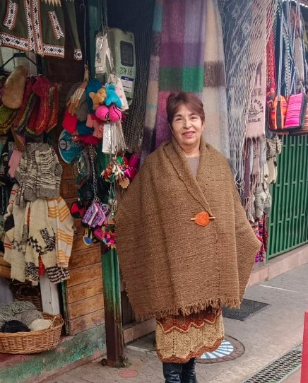
La artesana
Nativa de Chiloé, vive en Puerto Montt y atiende en la Galería Amar, local N° 8 del Pueblito Melipulli. Lleva muchos años en el tejido y sigue vigente: el puesto no es un recuerdo, es el trabajo de todos los días.
Aprendió el oficio en la isla y lo trajo al continente sin cambiar la materia. La lana es de oveja, natural, y cada prenda se arma a mano. En el pueblito se pueden ver los colores, pedir una talla o encargar una pieza parecida a las que están colgadas.
El oficio
El sur pide abrigo de verdad. Por eso las piezas no se arman con fibra sintética: salen de lana de oveja, tejida punto a punto.
La lana llega de oveja, con su cuerpo y su calor. Es la misma fibra que se ve en el logo: cruda, antes de convertirse en prenda.
Hay piezas en el tono del vellón y otras con color. En la falda de olas del mar, el teñido es natural vegetal, sobre lana de oveja.
Marlene sigue tejiendo y vendiendo en la Galería Amar, local N° 8 del Pueblito Melipulli. Años de oficio, y el rubro todavía en sus manos.
Visítanos
El puesto está en la Galería Amar, local N° 8, dentro del Pueblito Melipulli, en Puerto Montt. Ahí están las pantuflas, los gorros, los sweaters y las medias. Se puede mirar la lana de cerca y preguntar por talla o por un encargo.
Cómo llegar